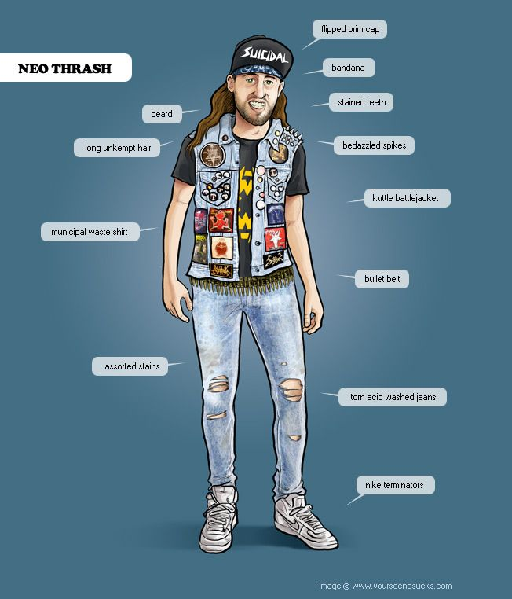
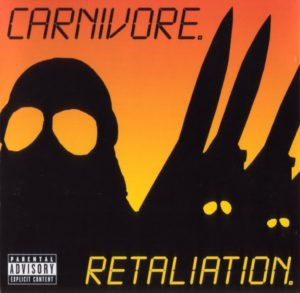
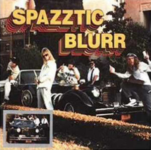
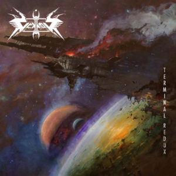
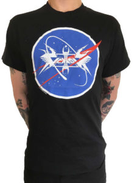

Aunque no lo parezca por el título, en este especial intentamos hacer un pequeño homenaje al thrash. Y sí, lo dice una persona a la que no le gusta especialmente el thrash (o eso cree). Hasta donde sabemos los estudiosos del metal meten al género en el saco de lo extremo, algo que puede chocar ya que la banda más grande de metal de la actualidad, con permiso en todo caso de Iron Maiden, nació al albor de estos sonidos acelarados. Aunque en el camino se cortaran el pelo.

Si a título personal me animo a escribir esto es porque noto que es un estilo que no termina de cuajar entre los amantes del metal extremo, quizá es demasiado estridente para el que escucha heavy más convencional. Tampoco llega a festivales o entornos “elevados” donde sí lo han hecho géneros como el black o el drone, con la excepción de Voivod o Coroner. Quizá el revival de thrash de los últimos años, aunque honesto y con buena intención, ha creado un sinfín de bandas clon que ha ocultado propuestas más originales y ha reducido el estilo musical a un disfraz patrocinado por marcas de ropa y bebida energética.
Dispuesto ya a hacer trampas, aquí tenéis una pequeña selección de discos de thrash para gente que no le gusta el thrash:
Carnivore – Retaliation

Type O Negative es uno de los grupos más respetados y queridos en esta casa, y por mucha reivindicación que hagamos de ellos nos quedaremos cortos. Pero antes de ser el darks más sexy del lugar, Pete Steele tuvo tiempo de tener unos comienzos acelarados, donde se podían intuir los cimientos de la banda que le llevó al éxito internacional. No eran ni los más prodigiosos con sus instrumentos, tenían obivas influencias del hardcore, aún sin ser los más rápidos… pero todo el buen saber hacer que se les presume estaba ahí, al igual que las letras polémicas y al límite del humor más negro.
Retaliation tiene un buen puñado de clásicos y desde aquí sólo podemos insistir en que escuchéis al volumen 11 temas como Jesus Hitler o el loquísimo Race War, con una mención especial a ese sonido de bajo distorsionado tan característico.
–
Spazztic Blurr – Spazztic Blurr

El caso de Spazztic Blurr es curioso: con miembros de bandas respetadas como Wermacht y en la onda de toda una escena de crossover intersantísimo con ejemplos como Unseen Terror o Cryptic Slaughter, fueron unos auténticos pioneros a la hora de extender y fundir géneros entre sí. Debido quizá a que por ser un grupo que basaba sus letras y música en el humor (es posible que la melodía de Popeye no sea lo más trve que se pueda escuchar) no han tenido el reconocimiento que sí tuvieron otras bandas coetáneas.
Los auténticos demenciales chicos acelerados, sus composiciones con mil géneros mezclados superan el disparate musical, y esto lo decimos como el mejor de los halagos. Como muestra el batiburrillo que es la canción Mexicali, que pasa del surf al hardcore, tocando estilos extremos en una broma autorreferencial que se va de madre y pasa de hablar de comida basura a homenajear a Beastie Boys. En serio, todo os lo que podamos escribir no tiene sentido sin escucharla.
Se dice que en su único disco homónimo fueron más pioneros con los blast beats que Napalm Death, y que los tocaban mejor y más rápido. Quizá los de Birmingham fueron más respetados por tomarse a sí mismo más en serio y ser más homogéneos dentro de la bola de ruido que supusieron.
Insistimos: Mexicali
–
Soziedad Alkoholika – Y ese que tanto habla, está totalmente hueco, ya sabéis que el cántaro vacío es el que más suena
Entendemos que para un fan de Megadeth o Exodus sea casi sacrílego que en una lista sobre Thrash aparezcan Soziedad Alkohólika, pero el grupo siempre ha sido algo más que “los de Motxalo” o “los de la camiseta del duente”. Endiosados por muchos y relegados al olvido por otros tantos por motivos que seguramente no vengan a cuento, los vitorianos han tenido una carrera muy heterogénea.
Han acabado haciendo un “metal hardcorizado”, coquetearon con el nu-metal, hacían esa palabra extraña llamada groove, siempre han sido más punks que tú y en su primera etapa eran el máximo exponente del crossover-thrash del Estado. Para esta lista la opción que más rápido viene a la cabeza es el Intoxiazión Etílika, que tiene algunos momentos de Slayer de gaztetxe memorables.
Pero entre esta etapa y el archiconocido Ratas hay un disco algo más olvidado, el innombrable Y ese que tanto habla…, más melódico, con medios tiempos, con arreglos de saxo, la canción de country más polémica del rock español y sí, también mucho tu-tu-pá a toda velocidad, marca de la casa.
–
Nailbomb – Point Blank
 Alguna vez hemos bromeado de manera interna que, en un manual de buenas prácticas true, se debe decir que Nailbomb es el mejor proyecto musical (y la época de su mejor peinado) de Max Cavalera. Broma o no, este Point Blank se ha convertido en un auténtico disco de culto, si bien es fácil cuando la trayectoria de un grupo es tan fugaz. Otro de tantos engendros musicales dentro del metal que según los puristas serían de todo menos Thrash. Alex Newport ,de Fudge Tunnel, ponía el contrapunto compositivo que siempre ha necesitado el citado Max Cavalera a la hora de brillar.
Alguna vez hemos bromeado de manera interna que, en un manual de buenas prácticas true, se debe decir que Nailbomb es el mejor proyecto musical (y la época de su mejor peinado) de Max Cavalera. Broma o no, este Point Blank se ha convertido en un auténtico disco de culto, si bien es fácil cuando la trayectoria de un grupo es tan fugaz. Otro de tantos engendros musicales dentro del metal que según los puristas serían de todo menos Thrash. Alex Newport ,de Fudge Tunnel, ponía el contrapunto compositivo que siempre ha necesitado el citado Max Cavalera a la hora de brillar.
La frontera entre metal y punk ya había sido ampliamente explorada por Sepultura, pero lo que hace especial a este conjunto es sin duda la inclusión a la fórmula de sintentizadores, sampleos y ritmos industriales con los que ya llevaban tiempo jugando bandas como Ministry o Godflesh.
Para rematar lo “true” del asunto, la banda únicamente actuó una vez en vivo, así que os recomendamos encarecidamente que véais la grabación de su paso por el Dynamo 95, con gente de Neurosis, Front Line Assembly y Dead Kennedys apoyando a la banda.
–
Vektor – Terminal Redux

Para el último disco hemos decidido dejar nuestros trucos más sucios y elegir una banda genuina de thrash… o algo así. Con el primer vistazo a la portada de Terminal Redux y el logo del grupo, Vektor apuntan claramente a los canadienses Voivod y su thrash de ciencia ficción.
El grupo juega la carta de la nostalgia pero lo hace francamente bien, y lo que hace aún mejor su apuesta es que esconde una mano de influencias bastante variada. Desde los primeros Death al thrash más técnico, pasando por una demostración de blast beats aceleradísimos y coros épicos que muchos grupos de prog quisieran para sí.
Quien quiera encontrar referencias a la ciencia ficción se va a hartar, y es que la banda cuenta entre su merchandising con la camiseta ideal para el perfecto “flipao” del espacio y el metal tocón.

Apoyános